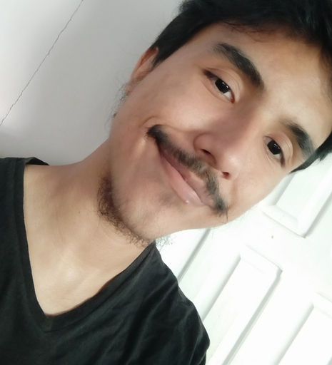

Gabriel Cacela de Melo

Sobre mim
Sou um estudante de desenvolvimento Web com foco em me tornar um Desenvolvedor FullStack. Moro em Afuá, município no Interior do Pará, apesar das dificuldades, como a conexão com a internet, tento tirar o máximo de conhecimento dos meus estudos e serviços.
Já estudei tecnologias como:
- - HTML
- - CSS
- - JavaScript
- - TypeScript
- - React
- - NodeJS
- - Express
Com destaque para o JavaScript e o TypeScript que foram dois divisores de águas no meu desenvolvimento.
Ir para o Blog favorito